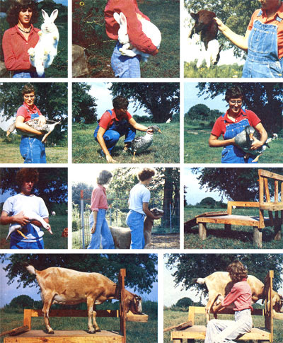
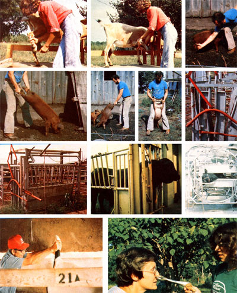

Got an ailing rabbit, goose, lamb, goat, pig, or cow that won't sit still long enough to take its medicine? Don't give up on the uncooperative critter until you've read what veterinarian Randy Kidd (of Kansas State University, Manhattan, Kansas) has to say!
One of the most important facets of "animal medicine"-and one of the first things they teach you in veterinary school-is restraint: the gentle art of getting your "patient" (be it a bull or a bantam hen) to stand still long enough for you to help it . . . or even find out "what ails the beast".
As you already know if you've had any experience with livestock, it's darn near impossible to inject medication into a moving target . . . and all too easy to find yourself in the way of a swiftly moving jaw, hoof, or horn. It's absolutely essential, thenfor the well-being of both the animal and its owner-for an "under the weather" critter to be kept still during treatment.
That doesn't mean, however, that a young steer-say-has to be boxed, tied, and tranquilized before it can be given a dose of oral vitamins. In general, the best restraint is no restraint at all. When you can apply treatment to an animal without tying it down (or doping it up), do so! If-on the other hand-you must catch and hold the critter, the idea is to do the job without hurting yourself or the beast. And that, basically, is what this article is all about.
One thing you should always bear in mind when you're dealing with an animal that isn't used to being restrained (and most aren't) is that flight is a beast's first response to being caught. Even the most docile doe kid goat can-when she senses she's being trapped-turn into a thrashing handful of teeth, horns, and hooves. The moral: Expect the unexpected. Always assume, too, that any creature which is bigger than you is also much stronge . . . and act accordingly.
Rabbits will-on occasion-bite or kick with their front feet . . . but their best defense (without a doubt) is their hind legs, which they can use to strike assailants with amazing speed, force, and rapidity. Here's how to avoid getting a "swift kick" the next time you have to handle one of the furry critters:
In the case of a small- or mediumsized hare, grab the animal by the scruff of the neck (NEVER by the ears) with one hand . . . and slide your other hand under the lower part of the bunny's curved back. (Do not place your hand or forearm against the animal's hind feet.) If you're dealing with a larger rabbit, simply grasp the fold of skin on his neck with one hand and support his lower back with your other arm . . . then position the animal so that his head fits under your arm, his body rests against your hip, and his "thumping end" is aimed away from you.
Small birds can be held motionless by gently pinning their wings against their body with your fingers. Your feathered friend may attempt to peck you, but you'll find that his beak is pretty ineffective as a defense mechanism.
Watch out for geese, however. A goose can very effectively use the leading edges of its wings as battering rams before you know what has hit you. (Gus-our goose-caught the bridge of my nose the other day with amazing accuracy. Only the dim memory of my street fighting days kept me on my feet!)
There is an approved method of counterattack, however: If treated gently, your honker's neck can be used as a handy handle. Then, after you nab the bird, pin his wings to his sides, aim his tail feathers forward, and tuck him under your arm. (Hint: Your prisoner will be calmer if you can tuck his head under one wing.)
One more thing: Don't forget-when grappling with your gander-that goose legs are very fragile and easily broken.
Sheep don't have much of a defense system. Although they can lower their heads and charge at intruders, they usually prefer to stamp their little hooves and run away.
If you need to, use a small gate to catch the lamb or sheep you're after in the corner of a pen. Then-without pulling on the woolplace your hands at the front and rear of the animal and hold it stationary. (It helps, of course, to have an assistant.) For foottrimming, shearing, and other more extensive procedures, you can set the lamb up on its rump and hold the critter from behind.
The homestead goat-which is usually friendly to a fault-is generally fairly easy to restrain. A milking stanchion and a little grain to nibble on are all most caprines ever need.
Some goats, however-particularly those that aren't accustomed to peopie-are difficult to catch in their pen. Here, it's necessary to grab the animal's beard (or the skin under its chin) as he runs past . . . after which you can raise his head and hold him against a wall or a fence. Most goats can be anchored quite easily with this tactic.
Sometimes, though, just holding a goat against a wall won't be enough the beast may still squirm, jump, and fidget so much that you can't apply the necessary treatment(s). Have patience . . . because by tying its head securely and then pressing your head firmly into the animal's flank (thus pinning him/ her against anything solid), you can work on injured teats or feet singlehandedly. (It may be necessary, too, to hold one of the beast's hind legs still.)
Incidentally, a little stanchion training prior to a doe's first milking session is well worth the effort. Start Nanny about a month before she's due to freshen by feeding her a small amount of grain in the stanchion during what will become her normal milking hours. Do nothing else in the beginning. Then, when the doe has become accustomed to this, sit beside her while she eats . . . and-as she relaxes more-start to pet her (all over at first, then gradually toward her udder). By the time she freshens, you should be able to milk Nanny with nary a complaint.
If you think this is a lot of work . . . just try-sometime-to strip out a kicking, bucking, squatting, squirming doe after it's taken you half the morning to get her into the stanchion in the first place. (Hint: Do not buy an older doe if you haven't milked her first.)
The ever-elusive pig can be as hard to grab as a greased frisbee. And, in addition to being difficult to hold onto, these animals can-and, if provoked, sometimes will-inflict serious wounds with their needle-like teeth. Hence, if you plan to have many oinkers around, a good holding crate with a head gate is an absolute necessity. (The occasional errant hog can be held in a corner with a strong portable gate of about the same length and height as the pig.)
Oftentimes a large hog will hold still if you can slip a noose over his snout behind the top tusks. To make a hog noose, securely fasten a section of rope or cable to one end of a several-foot-long piece of pipe, then feed the free end of the rope (or cable) back through the tubing and fasten a "crosswise" handle to the cable after you've pulled it out of the pipe's other end. Now just throw the loopedback rope over the porker's snout and-by pulling on the handlecinch the loop tight on the beast's nose. (The hog will normally try to back away from the holder, so hrace yourself.) Pull the lope s free end snug, and hold your ground.
The best way to handle smaller porkers is to grab their hind legs (above the hocks) and lift them off the ground (see photo). Don't attempt this, however, if the piglet's mama is within earshot. The mother sow will respond quickly and aggressively to any squeals from any one of her babies.
For prolonged procedures, you can hold the pig's hind legs up with the animal's body aimed rearward while you stand straddling him. If need be, you can further stabilize the young'un by anchoring him with your knees.
The only effective (and safe) way to restrain a hoofer ten times your size is to drive the beast into a narrow (say 26" to 28" wide) chute made of hardwood or iron. (Pine two-by-fours are no better than balsa wood when dealing with an angry cow or bull.) Use bolts or strong welds to hold the chute's members together, and make sure you've left no sharp corners on either the inside or the outside of the enclosure.
Next-working from behind the steer, bull, or whatever-use poles pushed crossways through the frame just behind him to keep the brute facing forward, and-once he's all the way in the chute-catch his head with a sturdy stanchion. (Dairy cows are best worked on when shut into their usual stanchion.)
To restrain of Bessie's head, you can buy or make a rope halter . . . or you can try using a bull lead (a pliers-like tool that is clamped into the animal's nose). Once the lead is in place, you can pull the beast's head as far through the stanchion as possible and over to one side, then tie her in place. (The first time I used one of these gadgets, 1 didn't have the cow's head pulled tightly enough. As a result, the animal flipped her head up, tossing the nose lead out of her snout and into the air. After the several necessary stitches, my head healed just fine, thank you.)
When you've secured your cow's head, you're halfway home . . . now all you have to worry about are those powerful back legs. To throw Bessie's hind end into neutral, grab the base of her tail from underneath (just ignore the smelly green stuff) and thrust it straight up. This'll put pressure on her nerves and make it more difficult (though not at all impossible) for her to kick. (Do apply a lot of upward pressure, though, and do stand well to one side . . . just in case your 1,500-pound lovely is not fully in neutral.)
Sometimes-in addition to the foregoingit's a good idea to tie a rope into a loose figure eight above the beast's hocks to keep her from kicking. Do not tie the rope to anything solid, however . . . you don't want Bessie to fall and break her legs when she tries to move. Have someone keep some tension on the line, though, to prevent unnecessary kicking and stomping.
Remember-whenever you find yourself trying to still a feisty critter-that the first rule in veterinary medicine (as in people medicine) is: Do no harm. If you find that you must restrain an animal, do it in such a way that you hurt neither yourself nor the beast.
And that's just about all I can tell you (in this limited amount of space, anyway) about animal restraint . . . except that "when in doubt, consult your veterinarian".
|
 TOP ROW. LEFT TO RIGHT: Pick a large rabbit up by the scruff of the neck with one hand while you support his rear with the other. Aim his kicking equipment away from you! . . . If you tuck a big bunny under on, -arm, ,you'll find it casy to carry him whererer you want . . Vetapproved fryer restraint. Grasp the animal just in front of the hind leg attachment, SECOND ROW, LEFT TO RIGHT: This goose is being handled gently, but he ain't goin' nowhere cc--cpt where you want hint to go! The most humane way to nab a goose . . . A common men way to hold a goose is to pin its wing., against its body THIRD ROW, LEFT TO RIGHT; Other foul, .such (is ducks.are also commonly held with their wings,spinned Two people gently restrain a goat The first holds the animat's head up and forces it, .shoulder., against the fence with her knee, while the second holds the doe's hips against the, fence with knee pressure applied just ahead of the hip bones . . A home made goat milking stand. BELOW Restrain and feed your doe in her milking stand before she's fresh, and. LEFT: . . . that first milking will be a lot less evenful |
 TOP ROW, LEFT TO RIGHT: It's easy to trim a cow's or milking goats hind feet . . . or front feet right in the stanchions that they're ordinarily milked in . . .Catch a small porker first by one hind leg. then , . . SECOND ROW, LEFT TO RIGHT: . . . by the other. . . As long as you hold both hind legs off the ground,the pig is under your complete control, except for his .squealer. Be careful if his mother is attracted by the noise! . . . A good way to hold a hog for an extended length of time . . . Close-up of business end of cattle chute. THIRD ROW, LEFT TO RIGHT: The whole chute . . This, Angus bull isn't happy (note froth on hismouth) but the metal chute which holds him won't let him hurt anybody.Once. a critter is locked into Kansas State's fancy cattle chute, the animal can be rotated to any position a veter? inarian desires. Fein MOTHER readers will ever need any thing so elaborate. BELOW: Push a cow's tail firmly up and forward to disengage her rear end and restrict her ability to kick. RIGHT: This is how a bull nose lead is applied; after your beef or dairy brute is securely trapped in a chute |
|